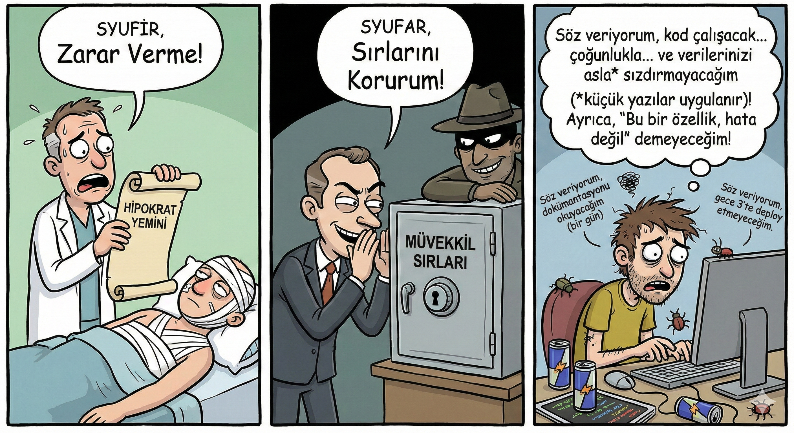
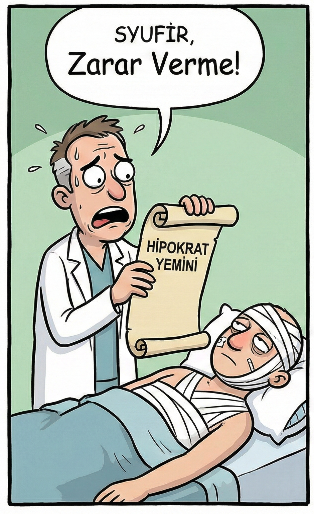
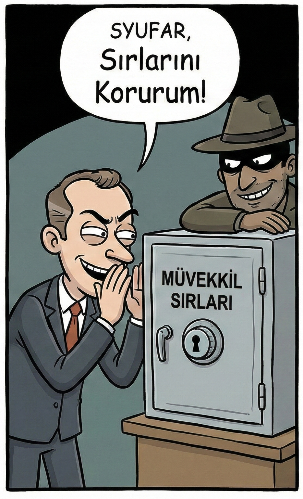
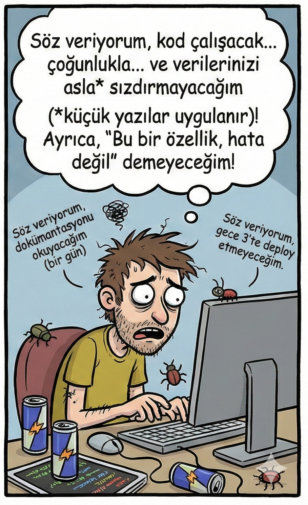

Profesyonel Etik:
Meslek ve Sorumluluk
Mühendislik Etiği • Etik Kodları • Vaka Analizleri
Sadece Kod Yazmak mı?
Bir doktor hastasına zarar vermemeye yemin eder. Bir avukat müvekkilinin sırlarını korur. Peki bir yazılım mühendisi kime, neye söz verir?

Mesleklerde Etik Nasıl İşler?
Doktor
Hipokrat Yemini

- "Önce zarar verme" (Primum non nocere)
- Hasta gizliliği
- Hata bildirimi zorunlu
Ceza: Lisans iptali
Avukat
Baro Yemini

- Müvekkil sırrını koru
- Adaletin tesisi
- Çıkar çatışmasından kaçın
Ceza: Barodan ihraç
Yazılım Müh.
ACM/IEEE Kodları

- Kamu yararına uygun davran
- Kalite standartlarını koru
- Yaşam boyu öğrenme
Ceza: ???
⚠️ Yazılım mühendisliğinde zorunlu lisans sistemi yok.
ACM
Association for Computing Machinery
IEEE
Computer Society
Mühendislik Etik Kodları
8 temel ilke ile mühendislerin topluma, müşteriye ve mesleğe karşı sorumluluklarını tanımlar.
BU KODLAR SİZİ DE KAPSAR
8 Temel İlke (1-4)
Kamu Yararı
PUBLIC
Yazılım mühendisleri, kamu yararına uygun hareket etmelidir. Güvenlik, sağlık ve refah her şeyden önce gelir.
Müşteri ve İşveren
CLIENT AND EMPLOYER
Müşteri ve işverenin çıkarlarını gözetmeli, ancak bu kamu yararı ile çelişmemelidir.
Ürün
PRODUCT
Ürünlerin en yüksek mesleki standartları karşılamasını sağlamalıdır. Hatalı kod bilerek teslim edilmez.
Yargı
JUDGMENT
Mesleki yargılarında dürüstlük ve bağımsızlıklarını korumalıdırlar. Rüşvet veya çıkar çatışmasından kaçınmalıdırlar.
8 Temel İlke (5-8)
Yönetim
MANAGEMENT
Yöneticiler, yazılım geliştirme ve bakımı için etik bir yaklaşım benimsemeli ve teşvik etmelidir.
Meslek
PROFESSION
Mesleğin bütünlüğünü ve itibarını geliştirmelidir. Kamu yararına uygun şekilde.
Meslektaşlar
COLLEAGUES
Meslektaşlarına karşı adil ve destekleyici olmalıdır. Takım çalışması ve bilgi paylaşımı.
Bireysel Gelişim
SELF
Yaşam boyu öğrenmeyi benimsemeli ve meslek pratiğine etik bir yaklaşım kazandırmalıdır.
Therac-25
Faciası
Mühendislik tarihinin en trajik yazılım hatasını uzmanından dinleyelim. Yazılımın öldürücü gücü.
Ne Oldu?
Olay Zinciri
Therac-25, kanser tedavisinde kullanılan bir radyoterapi cihazı.
Yazılımda race condition (yarış durumu) hatası vardı.
Operatör hızlı veri girişi yaptığında, cihaz 100 kat fazla radyasyon verdi.
6 hasta aşırı dozdan hayatını kaybetti veya ağır yaralandı.
Tek Geliştirici
Tüm yazılım tek bir kişi tarafından yazıldı. Kod incelemesi (code review) yapılmadı.
Test Eksikliği
Donanım güvenlik kilitleri kaldırılmış, yazılıma güvenilmişti. Yeterli test yapılmamıştı.
Uyarılar Yoksayıldı
İlk kazalardan sonra bile şirket hatayı kabul etmedi ve kullanıcı hatasını suçladı.
Therac-25'ten Çıkarılan Dersler
Code Review
Kodu tek kişi yazmamalı, mutlaka gözden geçirilmeli.
Test Süreçleri
Kritik sistemlerde kapsamlı test prosedürleri şart.
Yedekli Sistemler
Yazılım + donanım güvenlik katmanları birlikte çalışmalı.
Hata Kültürü
Hataları gizlemek yerine şeffaf biçimde raporlamak.
"Kodun hatası, insan hayatına mal olabilir. Bu yüzden mühendislik disiplini şarttır."
Whistleblowing
İfşaat / Muhbirlik
"Bir çalışan, kurumundaki yasa dışı veya etik dışı faaliyetleri kamuoyuna veya yetkili mercilere bildirdiğinde..."

Edward Snowden
NSA • 2013
NSA'de çalışan eski bir istihbarat analisti. ABD hükümetinin küresel gözetim programlarını (PRISM, XKeyscore) basına sızdırdı.
"Hükümetler gizlilik hakkı için en büyük tehdit."
Vatan Haini mi?
Devlet sırlarını ifşa etti. Ulusal güvenliği tehlikeye attı.
Kahraman mı?
Vatandaşların temel haklarını savundu. Şeffaflığı sağladı.
Frances Haugen
Facebook (Meta) • 2021
Facebook'ta (Meta) ürün yöneticisi olarak çalışıyordu. Şirketin algoritmalarının zararlarını bilerek görmezden geldiğini ABD Kongresi'ne ifade etti.
"Facebook, kârı güvenliğin önüne koyuyor. Ve bu, insanların hayatına mal oluyor."
ABD Kongresi İfadesi
Teknoloji şirketlerinin düzenlenmesi için tarihi duruşma.
Düzenleme Tartışmaları
AB ve ABD'de sosyal medya düzenlemesi hızlandı.
Sonuç
Facebook adını "Meta" olarak değiştirdi. DSA/DMA yasaları çıktı.
Haftaya: Yönetim Yaklaşımları
Liderlik ve Etik Karar Alma
Bu Hafta Öğrendiklerimiz
Profesyonel Etik
Meslek Sorumluluğu
ACM/IEEE Kodları
8 Temel İlke
Whistleblowing
İfşaat ve Cesaret
"İyi bir mühendis olmak yetmez, iyi bir insan olmak da gerekir."